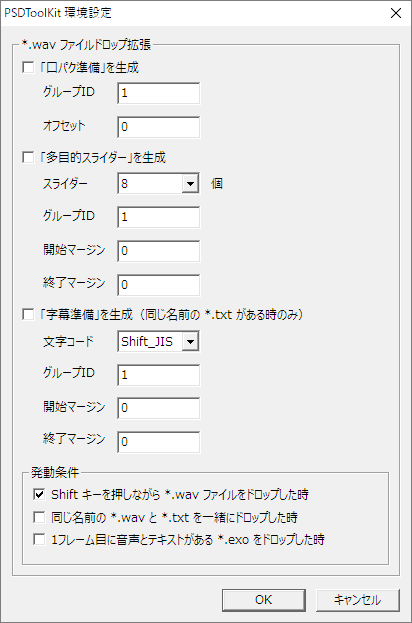

設定
環境設定ダイアログ
AviUtl のメインメニューから 編集→PSDToolKit→環境設定 を選ぶことで、PSDToolKit 環境設定 ダイアログを表示できます。

| 項目 | 説明 |
|---|---|
「口パク準備」を生成 |
チェックを付けると Shift キーを押しながらファイルをドロップした際に 口パク準備 を自動生成します。 |
グループID |
口パク準備 が所属するグループ ID を設定します。0 - グループ化しない1 - 音声ファイル とグループ化2 以上 - 他と同じ ID を指定することでそれらとグループ化 |
オフセット |
指定されたフレーム数だけ 口パク準備 の位置をずらします。 |
「多目的スライダー」を生成 |
チェックを付けると Shift キーを押しながらファイルをドロップした際に 多目的スライダー を自動生成します。 |
スライダー |
多目的スライダー で使用可能なスライダーの個数を設定します。 |
グループID |
多目的スライダー が所属するグループ ID を設定します。0 - グループ化しない1 - 音声ファイル とグループ化2 以上 - 他と同じ ID を指定することでそれらとグループ化 |
開始マージン |
多目的スライダー が 音声ファイルよりも何フレーム早く始まるかを設定します。 |
終了マージン |
多目的スライダー が 音声ファイルよりも何フレーム長く続くかを設定します。 |
「字幕準備」を生成 |
チェックを付けると Shift キーを押しながらファイルをドロップした際、*.wav ファイルと同じ名前の *.txt ファイルがあれば 字幕準備 を自動生成します。 |
文字コード |
*.txt ファイルの文字コードを指定します。 |
グループID |
字幕準備 が所属するグループ ID を設定します。0 - グループ化しない1 - 音声ファイル とグループ化2 以上 - 他と同じ ID を指定することでそれらとグループ化 |
開始マージン |
字幕準備 が 音声ファイル よりも何フレーム早く始まるかを設定します。 |
終了マージン |
字幕準備 が 音声ファイル よりも何フレーム長く続くかを設定します。 |
上記の処理は、チェックが入っている発動条件を満たした場合に動作します。
| 項目 | 説明 |
|---|---|
Shift キーを押しながら *.wav ファイルをドロップした時 |
Shift キーを押しながらファイルをドロップした際に拡張処理を発動させます。 |
同じ名前の *.wav と *.txt を一緒にドロップした時 |
同じ名前の２つのファイルをドロップした時に拡張処理を発動させます。 |
1フレーム目に音声とテキストがある *.exo をドロップした時 |
1フレーム目に 音声 と テキスト が配置されていて、かつそれ以外のオブジェクトがない *.exo ファイルがドロップされた時に拡張処理を発動させます。 |
設定のカスタマイズ
環境設定ダイアログよりも詳細な変更は、設定ファイルを書き換えることにより行えます。
設定の変更には setting.lua というファイルを作成する必要があります。
なお setting.lua での設定は PSDToolKit 環境設定 ダイアログでの設定よりも優先されます。
setting.lua の作り方
setting.lua を作るには script\PSDToolKit\setting.lua-template のファイル名を setting.lua に変更することで作成します。

setting.lua は文字エンコーディングが Shift_JIS のテキストファイルです。
このファイルをメモ帳などのテキストエディタで開き、編集していきます。
設定の書き方
設定を書くには、このページの下にある説明を参考に編集します。
例えば P.wav_firemode の設定を変更するには setting.lua に以下のように書き足します。
設定項目
*.wav ファイルを投げ込んだ時の設定
拡張編集のタイムラインに *.wav ファイルを投げ込んだ時に 口パク準備 / 多目的スライダー / 字幕準備 などを自動的に作成するために必要な設定です。
P.wav_firemode
*.wav ファイルをどのように投げ込むと 口パク準備 / 多目的スライダー / 字幕準備 などを自動生成する追加処理を発動させるかを設定します。
用途が合致している場合は 1 の設定が手間が少なく便利ですが、前提知識なしで使うと混乱の原因になるためデフォルト設定では 0 になっています。
| 値 | 説明 |
|---|---|
-1 |
Shift キーを使用した発動方法は利用しない |
0 |
*.wav ファイルをエクスプローラーで掴んだあと、Shift キーを押しながら拡張編集に投げ込むと発動 |
1 |
*.wav ファイルをエクスプローラーで掴んだあと、Shift キーを押さずに拡張編集に投げ込んだ時、*.wav ファイルと拡張子だけが違う *.txt （つまり こんにちは.wav に対して こんにちは.txt）があると発動。ただし Shift キーを押しながら拡張編集に投げ込んだ場合は発動しない |
2 |
*.wav ファイルを投げ込んだときは、Shift キーの状態に関わらず発動（※通常の用途には非推奨） |
P.wav_firemode_wavtxt
同じ名前の *.wav ファイルと *.txt ファイルを一緒に投げ込んだときに、追加処理を発動させるかを設定します。
| 値 | 説明 |
|---|---|
0 |
発動させない |
1 |
同じ名前の *.wav ファイルと *.txt ファイルを一緒に投げ込んだときは発動する |
P.wav_firemode_exo
1フレーム目に 音声 オブジェクトと テキスト オブジェクトがあり、それ以外のオブジェクトが一切存在しない *.exo ファイルを投げ込んだときに、追加処理を発動させるかを設定します。
| 値 | 説明 |
|---|---|
0 |
発動させない |
1 |
1フレーム目に 音声 オブジェクトと テキスト オブジェクトがあり、それ以外のオブジェクトが一切存在しない *.exo ファイルを投げ込んだときに発動する |
P.wav_lipsync
*.wav ファイルを投げ込んだ時に 口パク準備 を自動生成するかを設定します。
| 値 | 説明 |
|---|---|
0 |
口パク準備 は生成しない |
1 |
口パク準備 を自動生成する |
P.wav_lipsync_group
*.wav ファイルを投げ込んだ時に作成される 口パク準備 が所属するグループ ID を設定します。
| 値 | 説明 |
|---|---|
0 |
グループ化しない |
1 |
音声ファイル とグループ化 |
2～ |
他と同じIDを指定することでそれらとグループ化 |
P.wav_lipsync_offset
*.wav ファイルを投げ込んだ時に作成される 口パク準備 の配置を指定したフレーム数だけずらします。
P.wav_mpslider
*.wav ファイルを投げ込んだ時に 多目的スライダー をいくつ生成するかを指定します。
0 を指定した場合は１つも生成されません。
| 値 | 説明 |
|---|---|
0 |
口パク準備 は生成しない |
1以上 |
多目的スライダー を指定された個数生成する |
P.wav_mpslider_group
*.wav ファイルを投げ込んだ時に作成される 多目的スライダー の所属するグループ ID を指定します。
| 値 | 説明 |
|---|---|
0 |
グループ化しない |
1 |
音声ファイル とグループ化 |
2～ |
他と同じIDを指定することでそれらとグループ化 |
P.wav_mpslider_margin_before
*.wav ファイルを投げ込んだ時に作成される 多目的スライダー が 音声ファイル よりも何フレーム早く始まるかを設定します。
P.wav_mpslider_margin_after
*.wav ファイルを投げ込んだ時に作成される 多目的スライダー が 音声ファイル よりも何フレーム長く続くかを設定します。
P.wav_subtitle
*.wav ファイルを投げ込んだ時に同じファイル名で拡張子だけが違う *.txt （つまり こんにちは.wav に対して こんにちは.txt）がある場合に 字幕準備 を作成するかを設定します。
なお、*.wav を投げ込む時に *.txt も一緒に投げ込む必要はありません。
| 値 | 説明 |
|---|---|
0 |
字幕準備 は作成しない |
1 |
*.txt がある場合はその内容を本文に入れた テキスト を挿入 |
2 |
*.txt がある場合はその内容を本文に入れた 字幕準備 を挿入 |
P.wav_subtitle_group
*.wav ファイルを投げ込んだ時に作成される 字幕準備 の所属するグループ ID を指定します。
グループ化すると拡張編集のタイムライン上で 音声ファイル を掴んだ時などに一緒に移動できるため便利ですが、例えば 字幕準備 の内容が長すぎるなどの理由で分割したい時などにはグループ化を解除する必要があるため、その作業を頻繁に行う場合は無効化した方が便利です。
| 値 | 説明 |
|---|---|
0 |
グループ化しない |
1 |
音声ファイル とグループ化 |
2～ |
他と同じIDを指定することでそれらとグループ化 |
P.wav_subtitle_margin_before
*.wav ファイルを投げ込んだ時に作成される 字幕準備 が 音声ファイル よりも何フレーム早く始まるかを設定します。
P.wav_subtitle_margin_after
*.wav ファイルを投げ込んだ時に作成される 字幕準備 が 音声ファイル よりも何フレーム長く続くかを設定します。
P.wav_subtitle_encoding
*.txt の文字エンコーディングを設定します。
字幕準備 が文字化けする場合はこの設定を変更するか、この設定に合わせてテキストファイル側を変更する必要があります。
| 値 | 説明 |
|---|---|
"sjis" |
文字エンコーディングが Shift_JIS であるものとして読み込みます |
"utf8" |
文字エンコーディングが UTF-8 であるものとして読み込みます |
P:wav_subtitle_replacer
*.wav ファイルを投げ込んだ時、字幕準備 のテキストに対して書き換えを行う必要がある場合に設定します。
ここに渡されてくる文字列は Shift_JIS ではなく常に UTF-8 なので、日本語などを処理するときは日本語部分は UTF-8 で指定する必要があります。
設定例: 文頭にある "任意のテキスト＞" を削除
P.wav_subtitle_prefix/P:wav_subtitle_escape/P.wav_subtitle_postfix
字幕準備 の構築に必要になるスクリプトの処理内容を設定します。
一般的な用途においては変更する必要はありません。
P.wav_subtitle_prefix = '<?s=[==['
function P:wav_subtitle_escape(s) return s:gsub(']==]', ']==].."]==]"..[==[') end
P.wav_subtitle_postfix = ']==];require("PSDToolKit").subtitle:set(s, obj, true);s=nil?>'| 値 | 説明 |
|---|---|
"sjis" |
文字エンコーディングが Shift_JIS であるものとして読み込みます |
"utf8" |
文字エンコーディングが UTF-8 であるものとして読み込みます。ただし内部で Shift_JIS に変換されるため Shift_JIS にない文字は使えません |
P.wav_exafinder
*.wav ファイルを投げ込んだ時に使用される *.exa ファイルの検索方法を設定します。
この設定を使うと、拡張編集に投げ込んだ *.wav のファイル名などに応じて *.exa ファイル（エイリアスファイル）を切り替えることができます。
エイリアスファイル作成は拡張編集のタイムライン上でエイリアス化したいオブジェクトを右クリックして エイリアスの作成 から行います。出てきたウィンドウにある エイリアス名 に適当な名前を入れると aviutl.exe と同じ場所に 入力した名前.exa というファイルが作成されるので、そのファイルを exa フォルダーの中に配置して下さい。
なお複雑なエイリアスファイルを作った場合などには P:wav_examodifler_wav/P:wav_examodifler_lipsync/P:wav_examodifler_mpslider/P:wav_examodifler_subtitle の設定も変更する必要があるかも知れません。
| 値 | 説明 |
|---|---|
0 |
常に同じファイルを参照する 投げ込んだファイルに関わらず以下のエイリアスファイルが使用されます。 音声: wav.exa口パク準備: lipsync.exa字幕準備: subtitle.exa |
1 |
ファイルが入っているフォルダー名を元にする 例: 投げ込んだファイルが C:\MyFolder\TKHS_Hello_World.wav の時音声: MyFolder_wav.exa口パク準備: MyFolder_lipsync.exa字幕準備: MyFolder_subtitle.exa |
2 |
ファイル名を元にする 例: 投げ込んだファイルが C:\MyFolder\TKHS_Hello_World.wav の時音声: TKHS_Hello_World_wav.exa口パク準備: TKHS_Hello_World_lipsync.exa字幕準備: TKHS_Hello_World_subtitle.exa |
3 |
ファイル名の中で _ で区切られた最初の部分を元にする 例: 投げ込んだファイルが C:\MyFolder\TKHS_Hello_World.wav の時音声: TKHS_wav.exa口パク準備: TKHS_lipsync.exa字幕準備: TKHS_subtitle.exa |
4 |
ファイル名の中で _ で区切られた2つめの部分を元にする 例: 投げ込んだファイルが C:\MyFolder\TKHS_Hello_World.wav の時音声: Hello_wav.exa口パク準備: Hello_lipsync.exa字幕準備: Hello_subtitle.exa |
5 |
ファイル名の中で _ で区切られた3つめの部分を元にする 例: 投げ込んだファイルが C:\MyFolder\TKHS_Hello_World.wav の時音声: World_wav.exa口パク準備: World_lipsync.exa字幕準備: World_subtitle.exa |
function |
関数を設定すると上記以外のパターンにも対応できます。 例: function P:wav_exafinder(path) return "aaa" end を設定した時音声: aaa_wav.exa口パク準備: aaa_lipsync.exa字幕準備: aaa_subtitle.exa |
※上記ルールで該当するファイルが見つからない場合は wav.exa / lipsync.exa / subtitle.exa が代わりに使用されます。
P:wav_examodifler_wav/P:wav_examodifler_lipsync/P:wav_examodifler_mpslider/P:wav_examodifler_subtitle
*.wav ファイルを投げ込んだ時の *.exa ファイル改変内容を設定します。
エイリアスファイルを読み込んだ後、音声オブジェクトへの *.wav ファイルの割り当てや長さなどを設定するための設定です。
一般的な用途においては変更する必要はありません。
function P:wav_examodifler_wav(exa, values, modifiers)
exa:set("ao", "start", 1)
exa:set("ao", "end", values.WAV_LEN)
exa:set("ao", "group", 1)
exa:set("ao.0", "file", values.WAV_PATH)
end
function P:wav_examodifler_lipsync(exa, values, modifiers)
exa:set("vo", "start", 1)
exa:set("vo", "end", values.WAV_LEN)
exa:set("vo", "group", 1)
exa:set("vo.0", "param", "file=" .. modifiers.ENCODE_LUA_STRING(values.LIPSYNC_PATH))
end
function P:wav_examodifler_mpslider(exa, values, modifiers)
exa:set("vo", "start", 1)
exa:set("vo", "end", values.WAV_LEN)
exa:set("vo", "group", 1)
for i = 1, self.wav_mpslider do
local key = "vo." .. (i - 1)
exa:set(key, "_name", i == 1 and "カスタムオブジェクト" or "アニメーション効果")
exa:set(key, "track0", "0.00")
exa:set(key, "track1", "0.00")
exa:set(key, "track2", "0.00")
exa:set(key, "track3", "0.00")
exa:set(key, "check0", "0")
exa:set(key, "type", "0")
exa:set(key, "filter", "2")
exa:set(key, "name", "多目的スライダー@PSDToolKit")
exa:set(key, "param", "")
end
local key = "vo." .. self.wav_mpslider
exa:set(key, "_name", "標準描画")
exa:set(key, "X", "0.0")
exa:set(key, "Y", "0.0")
exa:set(key, "Z", "0.0")
exa:set(key, "拡大率", "100.00")
exa:set(key, "透明度", "0.0")
exa:set(key, "回転", "0.00")
exa:set(key, "blend", "0")
end
function P:wav_examodifler_subtitle(exa, values, modifiers)
exa:set("vo", "start", 1)
exa:set("vo", "end", values.SUBTITLE_LEN)
exa:set("vo", "group", self.wav_groupsubtitle and 1 or 0)
exa:set("vo.0", "text", modifiers.ENCODE_TEXT(values.SUBTITLE))
end*.lab ファイルを投げ込んだ時の設定
拡張編集のタイムラインに *.lab ファイルを投げ込んだ時に 口パク準備 の処理を行うための設定です。
P.lab_exafinder
*.lab ファイルを投げ込んだ時に使用される *.exa ファイルの検索方法を設定します。
この設定を使うと、拡張編集に投げ込んだ *.lab のファイル名などに応じて *.exa ファイル（エイリアスファイル）を切り替えることができます。
| 値 | 説明 |
|---|---|
0 |
常に同じファイルを参照する 投げ込んだファイルに関わらず以下のエイリアスファイルが使用されます。 lab.exa |
1 |
ファイルが入っているフォルダー名を元にする 例: 投げ込んだファイルが C:\MyFolder\TKHS_Hello_World.lab の時MyFolder_lab.exa |
2 |
ファイル名を元にする 例: 投げ込んだファイルが C:\MyFolder\TKHS_Hello_World.lab の時TKHS_Hello_World_lab.exa |
3 |
ファイル名の中で _ で区切られた最初の部分を元にする 例: 投げ込んだファイルが C:\MyFolder\TKHS_Hello_World.lab の時TKHS_lab.exa |
4 |
ファイル名の中で _ で区切られた2つめの部分を元にする 例: 投げ込んだファイルが C:\MyFolder\TKHS_Hello_World.lab の時Hello_lab.exa |
5 |
ファイル名の中で _ で区切られた3つめの部分を元にする 例: 投げ込んだファイルが C:\MyFolder\TKHS_Hello_World.lab の時World_lab.exa |
function |
関数を設定すると上記以外のパターンにも対応できます。 例: function P:lab_exafinder(path) return "aaa" end を指定した時aaa_lab.exa |
※上記ルールで該当するファイルが見つからない場合は lab.exa が代わりに使用されます。
P:lab_examodifler/P.lab_lipsync_prefix/P:lab_lipsync_escape/P.lab_lipsync_postfix
*.lab ファイルを投げ込んだ時の *.exa ファイル改変処理を設定します。
エイリアスファイルを読み込んだ後、スクリプト処理を割り当てるための設定です。
一般的な用途においては変更する必要はありません。
function P:lab_examodifler(exa, values, modifiers)
exa:set("vo", "start", values.START + 1)
exa:set("vo", "end", values.END + 1)
exa:set("vo", "group", 1)
exa:set("vo.0", "text", modifiers.ENCODE_TEXT(values.LIPSYNC))
end
P.lab_lipsync_prefix = '<?l='
function P:lab_lipsync_escape(s) return GCMZDrops.encodeluastring(s) end
P.lab_lipsync_postfix = ';require("PSDToolKit").talk:setphoneme(obj,l);l=nil?>'*.srt ファイルを投げ込んだ時の設定
*.srt ファイルを拡張編集のタイムラインに投げ込んだ時に 字幕準備 作成を行うための設定です。
P.srt_insertmode
*.srt ファイルを投げ込んだ時に テキスト と 字幕準備 のどちらを作成するかを設定します。
| 値 | 説明 |
|---|---|
0 |
テキスト を挿入 |
1 |
字幕準備 を挿入 |
P.srt_encoding
*.srt ファイルの文字エンコーディングを指定します。
| 値 | 説明 |
|---|---|
"sjis" |
文字エンコーディングが Shift_JIS であるものとして読み込みます |
"utf8" |
文字エンコーディングが UTF-8 であるものとして読み込みます |
P.srt_subtitle_margin_before
*.srt ファイルを投げ込んだ時に作成される 字幕準備 の範囲が指定されたフレーム数だけ本来の範囲よりも早く始まるようにします。
P.srt_subtitle_margin_after
*.srt ファイルを投げ込んだ時に作成される 字幕準備 の範囲が指定されたフレーム数だけ本来の範囲よりも長く続くようにします。
P.srt_exafinder
*.srt ファイルを投げ込んだ時に使用される *.exa ファイルの検索方法を設定します。
この設定を使うと、拡張編集に投げ込んだ *.srt のファイル名などに応じて *.exa ファイル（エイリアスファイル）を切り替えることができます。
| 値 | 説明 |
|---|---|
0 |
常に同じファイルを参照する 投げ込んだファイルに関わらず以下のエイリアスファイルが使用されます。 srt.exa |
1 |
ファイルが入っているフォルダー名を元にする 例: 投げ込んだファイルが C:\MyFolder\TKHS_Hello_World.srt の時MyFolder_srt.exa |
2 |
ファイル名を元にする 例: 投げ込んだファイルが C:\MyFolder\TKHS_Hello_World.srt の時TKHS_Hello_World_srt.exa |
3 |
ファイル名の中で _ で区切られた最初の部分を元にする 例: 投げ込んだファイルが C:\MyFolder\TKHS_Hello_World.srt の時TKHS_srt.exa |
4 |
ファイル名の中で _ で区切られた2つめの部分を元にする 例: 投げ込んだファイルが C:\MyFolder\TKHS_Hello_World.srt の時Hello_srt.exa |
5 |
ファイル名の中で _ で区切られた3つめの部分を元にする 例: 投げ込んだファイルが C:\MyFolder\TKHS_Hello_World.srt の時World_srt.exa |
function |
関数を設定すると上記以外のパターンにも対応できます。 例: function P:srt_exafinder(path) return "aaa" end を指定した時aaa_srt.exa |
※上記ルールで該当するファイルが見つからない場合は srt.exa が代わりに使用されます。
P:srt_examodifler
*.srt ファイルを投げ込んだ時の *.exa ファイル改変処理を設定します。
一般的な用途においては変更する必要はありません。
function P:srt_examodifler(exa, values, modifiers)
exa:set("vo", "start", values.START + 1)
exa:set("vo", "end", values.END + 1)
exa:set("vo", "group", 1)
exa:set("vo.0", "text", modifiers.ENCODE_TEXT(values.SUBTITLE))
endP:srt_subtitle_replacer
*.srt ファイルを投げ込んだ時、字幕準備 のテキストに対して書き換えを行う必要がある場合に設定します。
ここに渡されてくる文字列は Shift_JIS ではなく常に UTF-8 なので、日本語を置換するときは日本語部分は UTF-8 で指定する必要があります。
P.srt_subtitle_prefix/P:srt_subtitle_escape/P.srt_subtitle_postfix
*.srt ファイルを投げ込んだ時の 字幕準備 スクリプトの処理内容を設定します。
一般的な用途においては変更する必要はありません。
P.srt_subtitle_prefix = '<?s=[==['
function P:srt_subtitle_escape(s) return s:gsub(']==]', ']==].."]==]"..[==[') end
P.srt_subtitle_postfix = ']==];require("PSDToolKit").subtitle:set(s, obj, true);s=nil?>'Instant CTalk の設定
Instant CTalk は実験的な機能なので、将来的には大きく変更されるかもしれません。
P.ictalk_firemode
Instant CTalk で作成した音声をどのように挿入するかを設定します。
| 値 | 説明 |
|---|---|
0 |
*.wav ファイルのみを追加する |
1 |
*.wav ファイルと 口パク準備 を追加する字幕用テキストを出力した場合は テキスト または 字幕準備 も作成する |
P.ictalk_format
Instant CTalk で作成した音声がどのようなファイル名で保存されるのかを設定します。
| 値 | 説明 |
|---|---|
0 |
こんにちは.wav |
1 |
180116_172059_こんにちは.wav |
2 |
キャラ名_こんにちは.wav |
3 |
180116_172059_キャラ名_こんにちは.wav |
上記の説明は 2018年1月16日 17時20分59秒 に こんにちは というセリフを キャラ名 というキャラクターの声で作成した場合の例です。
文字列を UTF-8 で記述する
P:wav_subtitle_replacer や P:srt_subtitle_replacer は文字列を UTF-8 で記述する必要がありますが、そのやり方は色々あります。
1. ファイルを分ける
下記のようなファイルを replacer.lua として UTF-8 で作成した上で、
setting.lua 上ではそのファイルを読み込むように指定します。
2. 変換する
変換すれば setting.lua 上に直接記述できます。
function P:wav_subtitle_replacer(s)
s = s:gsub(GCMZDrops.convertencoding("こんにちは", "sjis", "utf8"), "Hello")
return s
end3. 直接記述する
変換後の結果を直接 setting.lua に記述することもできます。